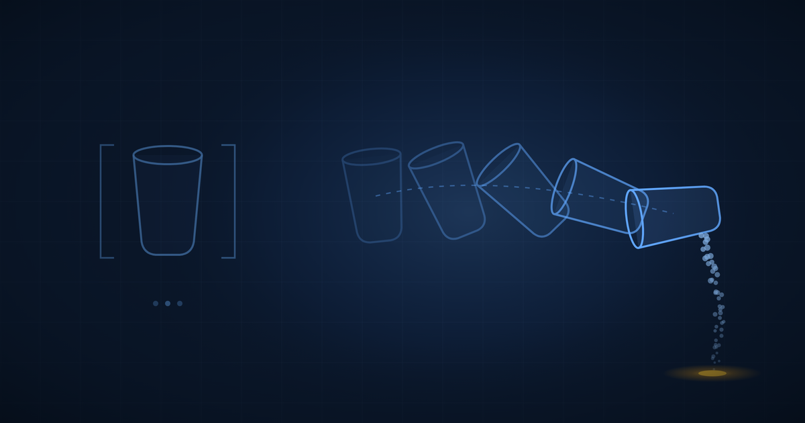

أفعال لا أسماء
سياسات الروبوت ترث كفاءتها من نموذجها الأساس، والنماذج اللغوية لم يُطلب منها يومًا أن تتعلّم الفيزياء.
إبراهيم أبو الهول، دكتوراه، مهندس محترف، عضو أول في IEEE
قائد تقني في الذكاء الاصطناعي
يستطيع نموذج الرؤية واللغة والفعل أن ينظر إلى طاولة ويحدّد أيُّ الأجسام هو الكأس. لكن ادفع الكأس نحو الحافة واسأله عمّا سيحدث بعد ذلك، فستجده على أرض هشّة، لأن شيئًا في تدريبه لم يُلزِمه يومًا بأن يعرف.
هذه ليست فجوة في الحجم، بل فجوة في النَّسَب. فنموذج الرؤية واللغة والفعل (VLA) يُبنى بأخذ نموذج رؤية ولغة دُرِّب مسبقًا على صور مقترنة بنصوص، ثم يُركَّب عليه رأس فعل (action head). وأوزان النظام كلّها تقريبًا اكتُسبت أثناء تعلُّم العلاقة بين الصور والكلمات. لذلك يرث النموذج فهمًا متينًا للأسماء والفئات، ولا يكاد يرث شيئًا عن كيفية حركة الأشياء.
النموذج بارع في ما أجبره هدف تدريبه المسبق على البراعة فيه. التنبّؤ بالوصف النصّي يجعله فصيحًا في الأسماء. أمّا التنبّؤ بالإطار التالي فهو وحده ما يجعله فصيحًا في الأفعال.
ما الذي يورِّثه النموذج الأساس
الطريقة المفيدة لقراءة أي سياسة روبوت هي أن تسأل: ماذا كان هذا النموذج قبل أن يصبح سياسة روبوت؟ المخطّطات المعمارية ترسم رأس الفعل في نهاية المسار، فيبدو وكأنه الجزء المهم. وهو في الحقيقة أصغر الأجزاء. النموذج الأساس (backbone) هو ما يحدّد ما يعرفه النظام، أمّا الرأس فيحدّد كيفية التعبير عن تلك المعرفة فحسب.
وتضع NVIDIA الفارق على هذا الخط تحديدًا. فنموذج العالم والفعل (WAM) يُعرَّف بأنه سياسة «تبدأ من نموذج عالَم أو نموذج فيديو مُدرَّب مسبقًا، ثم تُكيَّف لتمثيل أو توقّع كيفية تغيّر المشهد عبر الزمن وإصدار الأفعال المقابلة». أمّا نموذج الرؤية واللغة والفعل فيبدأ من نموذج أساس للصور والنصوص. الرأس نفسه، والسَّلف مختلف، وهذا الاختلاف في السَّلف هو الحُجّة كلّها.
مدوَّنة الصور والنصوص فهرسٌ لأشياء موجودة. أمّا مدوَّنة الفيديو فسِجلٌّ لأحداث تقع. وواحدة فقط من هاتين تحتوي على المعلومة القائلة إن السائل المسكوب يسقط، وإن الكُمّ المطويّ يبقى مطويًّا، وإن الورقة تنزلق على أختها قبل أن تنفصل عنها. ولا يمكنك استخراج ذلك من الأوصاف النصّية مهما كبر حجمها، لأن تلك الأوصاف لم يُطلب منها يومًا أن ترمِّز هذه المعلومة.
تنبّأ بالعالم أولًا، ثم تصرَّف
يمثّل DreamZero أوضح تجسيد لهذا التصحيح. فهو محوّل انتشار انحداري ذاتي (autoregressive diffusion transformer) بحجم 14 مليار معامل، مبني على Wan2.1-I2V-14B، وهو نموذج أساس لتوليد الفيديو. يتلقّى ثلاثة مدخلات: السياق البصري عبر مُرمِّز تبايني، والتعليمة اللغوية عبر مُرمِّز نصّي، وحالة مفاصل الروبوت نفسه عبر مُرمِّز حالة. ثم يزيل الضوضاء عن الفيديو المستقبلي والأفعال المستقبلية معًا عبر كتل محوّل مشتركة، مع مُفكِّك ترميز منفصل لكلٍّ منهما، ويعمل في حلقة مغلقة بتردّد 7 هرتز.
ونتيجة هذا التصميم تغيُّرٌ في ما يُطلب من النموذج أن يتعلّمه. فالسياسة التقليدية تتعلّم تخطيطًا كثيفًا من الحالات إلى الأفعال عبر محاكاة العروض التوضيحية. أمّا نموذج العالم والفعل فيتنبّأ بما سيبدو عليه المشهد بعد قليل، ثم يستنتج أوامر المحرّكات المتّسقة مع ذلك المستقبل. وتصف NVIDIA هذا الانتقال بأنه تحويل لتعلُّم الفعل باتجاه الديناميكا العكسية (inverse dynamics)، وهي مسألة أفضل صياغةً بكثير: سؤال «أيّ حركة تُنتج هذه النتيجة» أيسر من سؤال «أيّ حركة ينبغي أن أقوم بها».
ويحمل البحث اسم Jim Fan بين مؤلّفيه، وهذا مهم عند قراءته. فالحجّة نفسها تظهر في محاضرته لدى Sequoia بصيغة أوسع، والصيغتان لا تقولان الشيء ذاته. المحاضرة هي تسويق الفكرة. أمّا البحث فهو الدليل عليها، والدليل أضيق.
ماذا تُظهر الأرقام فعلًا
عبر عشر مهام لم يرها النموذج من قبل، أنجز DreamZero نسبة 39.5 بالمئة من تقدّم المهمة المحدَّد. أمّا أقوى مقارنة، وهي GR00T N1.6 بتدريبه المسبق الخاص، فبلغت 16.3 بالمئة. وفي تقييم منفصل على DROID-Franka سجّل 49 بالمئة تقدّمًا في المهمة ونسبة نجاح 22.5 بالمئة، مقابل 31 بالمئة و12.5 بالمئة لـ GR00T N1.6. وعلى لوحة صدارة RoboArena يقف عند 1750 نقطة إيلو، متقدّمًا على Pi-0.5 عند 1622.
والصفّان الأهم هما الصفّان في أسفل الرسم. فـ GR00T N1.6 وPi-0.5 حين يُدرَّبان من الصفر، دون أي تدريب مسبق، يسجّلان معًا أقل من واحد بالمئة. ومهما كان ما تفعله هاتان المعماريتان، فهما لا تتعلّمانه من عروض الروبوت التوضيحية. تلك العروض طبقة تكييف رقيقة فوق شيء كان موجودًا سلفًا، والخلاف بين نماذج الرؤية واللغة والفعل ونماذج العالم والفعل هو خلاف حول ماهية ذلك الشيء.
وكفاءة البيانات تشير إلى الاتجاه نفسه. فقد حقّق DreamZero تحسّنًا نسبيًا يزيد على 42 بالمئة في المهام الجديدة انطلاقًا من 10 إلى 20 دقيقة من عروض الفيديو وحدها، وتكيّف مع جسم روبوتي مختلف تمامًا من 30 دقيقة من بيانات اللعب. وهذه أرقام لا تراها إلّا حين تكون معظم الكفاءة سابقة للمهمة نفسها.
الجزء الذي لا يزال فرضية
الصيغة التي تنتشر على وسائل التواصل تقول إن نماذج الفيديو تكتشف تلقائيًا الجاذبية والاحتكاك والطفو بمجرّد تعلّمها التنبّؤ بالإطارات. وهي عبارة جميلة. لكن البحث لا يقولها.
ما يقوله البحث هو أن النموذج يُهيَّأ من أوزان انتشار فيديو دُرِّبت على فيديو واسع النطاق، وأن ذلك يمنحه أولويّات مكانية زمانية نافعة. وكتابة NVIDIA نفسها حذرة على نحو لا تلتزم به المحاضرة. فهي تطرح ثلاث فرضيات، كلٌّ منها مشروطة: أن التنبّؤ بالديناميكا العكسية «أيسر غالبًا» من توليد الفعل مباشرة، وأن الفجوة بين الفيديو والفعل «قد تكون أصغر» من الفجوة بين اللغة والفعل، وأن بيانات الفيديو تُنظِّم سياسات الروبوت. هذه تخمينات معقولة تتّسق معها نتيجة مقيسة. لكنها ليست برهانًا على أن قانونًا فيزيائيًا بعينه قد جرى تعلُّمه.
ويستحق هذا التمييز أن نتمسّك به، لأن هذا الموقع ناقش الحالة العامة بإسهاب في Intelligence Is Applied Causality. فالنظام الذي يتنبّأ بالحالة التالية بدقّة ليس بالضرورة نظامًا يحمل نموذجًا للآلية السببية، والاثنان ينفصلان بأوضح ما يكون خارج توزيع التدريب، وهو بالضبط الموضع الذي يثبت فيه الروبوت جدواه. والخلاصة الأمينة عن DreamZero أن النموذج الأساس المرئي ينتقل أفضل من النموذج اللغوي بفارق واسع، وأن سبب تفوّقه لا يزال استنتاجًا لا برهانًا.
تجربة الحذف التي تحسم الأمر في منظومتك أنت
# Hold the action head, the robot data and the tasks fixed.
# Vary only what the policy was before it was a policy.
for backbone in ["none", "vision_language", "video_world_model"]:
policy = train(backbone=backbone, robot_data=SMALL_SLICE)
score(policy, tasks=UNSEEN_TASKS) # never present in robot_data
# If the "none" arm collapses toward zero and the other two
# do not, your pretraining is the product and the head is a
# detail. Budget accordingly.تظلّ الروبوتات تكتشف من جديد أن القرارات المهمة تُتَّخذ قبل أن يدخل الروبوت في الصورة. رأس الفعل ينال اهتمام المهندسين لأنه الموضع الذي يظهر فيه الروبوت في المخطّط، وهو الجزء الأقل أهمية. فمعماريّتان بالرأس نفسه وسَلَفين مختلفين تفترقان بأكثر من الضعف في المهام الجديدة، وتنهاران معًا إلى لا شيء حين لا يكون هناك سَلَف أصلًا.
والقراءة العملية لمن يموّل هذا العمل هي أن سياسة الروبوت في جوهرها رهان على مدوَّنة تدريب مسبق. والاختيار بين نموذج أساس لغوي ونموذج أساس مرئي هو اختيار بين أن يكون النظام أفضل في التعرّف على العالم أو أفضل في استباقه. وبالنسبة لآلة عليها أن تتصرّف، فالاستباق هو المهارة الأنفع، والأدلّة اليوم ترجّحه بوضوح يكفي للتخطيط على أساسه، شرط ألّا يبالغ أحد في تفسير سبب نجاحه.
ما الذي ينبغي على القادة فعله
- اسأل أي مورّد روبوتات عمّا دُرِّبت عليه سياسته مسبقًا قبل أن ترى روبوتًا قط، واعتبر الإجابة المبهمة إجابةً بحد ذاتها. فالنموذج الأساس يتنبّأ بالسلوك في المهام خارج العرض التوضيحي أفضل بكثير من أي رقم في لوحة النتائج.
- نفّذ تجربة الحذف الثلاثية أعلاه على مهامك أنت قبل الالتزام بأي معمارية: بلا تدريب مسبق، ثم بتدريب لغوي، ثم بتدريب مرئي، مع تثبيت كل شيء آخر. تكلفتها دورة تدريب واحدة، وهي النسخة الوحيدة من هذه المقارنة التي تعكس بياناتك.
- قيِّم على مهام غائبة فعلًا عن مجموعة تدريبك، وأبلغ عن تقدّم المهمة لا عن نسبة النجاح وحدها. فالمقياس الثنائي يخفي الكفاءة الجزئية التي تفصل السياسة القابلة للانتقال عن السياسة التي حفظت عن ظهر قلب.
- حين يقول مورّد إن نموذجه تعلّم الفيزياء، اسأل: أيّ كمية فيزيائية، ومقيسة كيف؟ فالأدلّة المنشورة تدعم انتقالًا أفضل من التدريب المسبق على الفيديو، لا اكتشاف قانون فيزيائي، والعقود ينبغي أن تُكتب على أساس الدعوى الأولى.
مقالات ذات صلة
المراجع والقراءات الموسّعة
- Ye, S., Ge, Y., Zheng, K., Gao, S., Yu, S., ومعهم Fan, L. وJang, J. (2026). World Action Models are Zero-shot Policies. arXiv:2602.15922. مصدر نموذج DreamZero وخطوط الأساس وكل أرقام تقدّم المهمة الواردة هنا. arxiv.org/abs/2602.15922
- NVIDIA (2026). Pretrained to Imagine, Fine-Tuned to Act: The Rise of World-Action Models. مصدر تعريف نموذج العالم والفعل والفرضيات الثلاث المشروطة. developer.nvidia.com
- NVIDIA. What Is a World Action Model (WAM)? nvidia.com/en-us/glossary/world-action-model
- Fan, L. (2026). Robotics: Endgame. Sequoia Capital AI Ascent. المحاضرة التي تُعرض فيها الصيغة الأقوى عن تعلّم الفيزياء من الفيديو. youtube.com/watch?v=3Y8aq_ofEVs
- Shukor, M., Aubakirova, D., Capuano, F., وآخرون (2025). SmolVLA: A Vision-Language-Action Model for Affordable and Efficient Robotics. arXiv:2506.01844. arxiv.org/abs/2506.01844
- Cadene, R., Aliberts, S., Capuano, F., وآخرون (2026). LeRobot: An Open-Source Library for End-to-End Robot Learning. ICLR 2026. arXiv:2602.22818. arxiv.org/abs/2602.22818